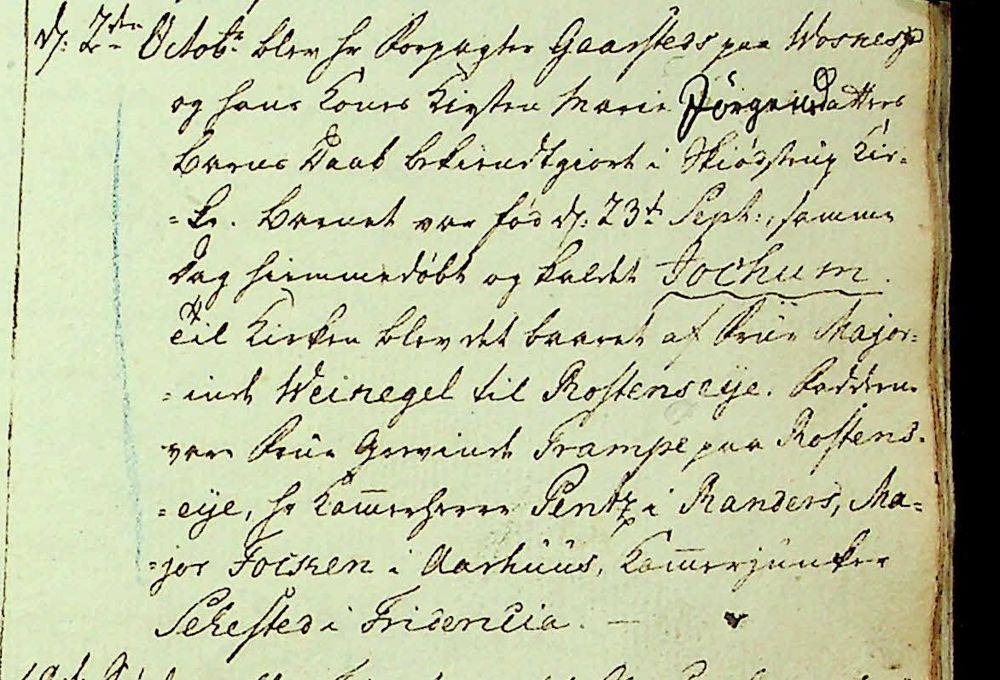

Medie · images_jochum-baptism-skodstrup-1792.jpg
Jochums dåb, Skødstrup 1792

'Hr. Forpagter Gaardsted paa Vosnæsgaard og hans Kone Kirstine Marie Jørgensdatter … Barnet var fød d. 23de Sept. … kaldet Jochum.'
Medie · images_jochum-baptism-skodstrup-1792.jpg

'Hr. Forpagter Gaardsted paa Vosnæsgaard og hans Kone Kirstine Marie Jørgensdatter … Barnet var fød d. 23de Sept. … kaldet Jochum.'